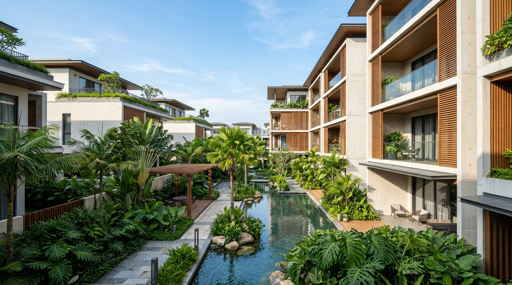

Service 01
Residential Construction
We construct durable landed housing developments, semi-detached villas, and multi-story residential condominiums engineered for Malaysia's tropical climate, ventilation, and thermal comfort.
- Landed terrace and bungalow estates
- High-rise condominium structural shells
- Reinforced concrete & M&E fit-outs
- Site drainage and external landscaping